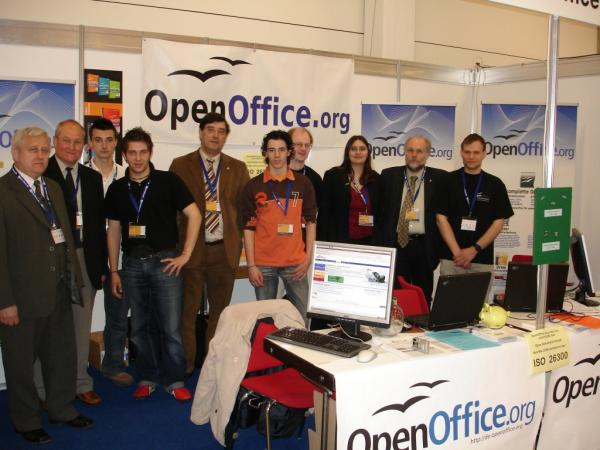

| Empfang |
|---|
| Startseite |
| Software |
| Produktinfo |
| Features |
| Download |
| CD-ROM bestellen |
| Rechtschreibprüfung |
| Dokumentation |
| Inhalt |
| Installationshandbuch |
| How-Tos |
| FAQs |
| Literatur |
| Support |
| Hilfe per Mail |
| Foren (extern) |
| Professioneller Support |
| Marketing |
| Marketing-Material |
| Veranstaltungen |
| Presse-Infos |
| Presse-FAQ |
| Über das Projekt |
| Geschichte |
| Meilensteine |
| Unterprojekte |
| Incubator |
| Whitepapers |
| Sponsoren |
| Mithelfen |
| ... aber wie? |
| Zuwendungen |
| Ansprechpartner |
| Sonstiges |
| Bildungsportal |
| Danksagungen |
| Links |
| Unsere Seiten linken |
| Rechtliches |
| Infos für Helfer |
de.OpenOffice.org auf dem LinuxTag 2006
Letzte Aktualisierung: 11. Mai 2006
Von Mittwoch, den 3. bis Samstag, den 6. Mai 2006 war OpenOffice.org auf dem LinuxTag mit einem eigenen Stand vertreten. Dieses Jahr fand der LinuxTag das erste Mal in Wiesbaden in den Rhein-Main-Hallen statt
Vor Ort waren:
| Jacqueline Rahemipour | gesamte Messe |
| Thomas Krumbein | gesamte Messe |
| André Schnabel | gesamte Messe |
| Florian Effenberger | gesamte Messe |
| Friedrich Strohmaier | Donnerstag |
| Uwe Altmann | Donnerstag bis Samstag |
| Niels Jende | |
| Andreas Mantke | Freitag |
| Eric Hoch | Samstag |
| Thomas Hackert | |
| Sigrid Kronenberger | |
| Mechtilde Stehmann | Samstag |
| Michael Stehmann | Samstag |
Während der Messebeginn am Mittwoch noch recht verhalten war, was nicht zuletzt am sehr schönen Wetter gelegen haben dürfte, nahm die Zahl der Besucher während der Messetage immer mehr zu. Das Publikum auf dem LinuxTag ist naturgemäß schon erfahrener in Bezug auf OpenOffice.org, und so waren die meisten Fragen, die wir beantworten durften, spezielle Fragen zu Features, wobei die Punkte Base und MSO-Kompatibilität auch diesmal klar im Vordergrund standen. Die Zertifizierung von OpenDocument als ISO-Standard kam pünktlich zur Messe und auch hierfür erreichten uns viele Fragen, welche (positiven) Auswirkungen diese Entwicklung auf OpenOffice.org haben wird.
Gleichzeitig mit Eröffnung des LinuxTages begann auch die Bewerbungsfrist für das CampOpenOffice.org, welches wir auf der Messe vorgestellt haben und wofür sich bereits zahlreiche Interessenten angekündigt haben. Neben der Präsentation mit einem eigenen Stand war OpenOffice.org auch mit einem Vortrag und zwei Workshops vertreten. Am Mittwoch referierte Jacqueline zum Thema "OpenOffice.org - Ein Blick hinter die Kulissen" und brachte den trotz schönen Wetters zahlreichen Zuhörern die Community und die Arbeit in einem Open-Source-Projekt näher. Am Freitag hielt sie einen Workshop zum Thema "Erstellen umfangreicher Dokumente mit OpenOffice.org" ab, der ebenso gut mit interessierten Zuhörern besucht war und zahlreiche konstruktive und interessante Gespräche hervorbrachte. Direkt im Anschluss hatten André und Uwe einen Workshop zum Thema "QA bei OpenOffice.org - Smoketests auf dem Mac" und weihten interessierte Zuhörer in den wichtigen Bereich der Qualitätssicherung ein.
Ein Highlight der Messe war mit Sicherheit der Besuch der Bundesjustizministerin Brigitte Zypries, die sich am Freitag noch überraschend angekündigt und sich am Stand über die Arbeit im deutschsprachigen Projekt informiert hat. Auch über die Idee des CampOpenOffice.org wurde rege diskutiert und informiert.
Besonderer Dank gilt Manfred Reiter und seinen Schülern, die am Stand des Linux-Verbandes das Comenius-Schulprojekt präsentierten. Im Rahmen des Projektes wurden mit Hilfe von Open Source und insbesondere OpenOffice.org Unterrichtsmaterialien erstellt für Schüler aus Deutschland, Polen, Portugal, Spanien und der Slowakei.
Neben der Arbeit sollte auch der Spaß nicht zu kurz kommen. Wiesbaden zeigte sich bei herrlichem Sonnenschein und T-Shirt-Wetter von seiner schönsten Seite, sodass wir den Mittwochabend bei einem Italiener in der Innenstadt haben ausklingen lassen. Donnerstagabend fand der traditionelle "Social Event" - ein Community-Treffen aller OSS-Projekte - in gemütlicher Atmosphäre im Wiesbadener "Schlachthof" statt. Bei gutem Essen und guter Musik philosophierten und diskutierten wir bis in die frühen Morgenstunden, weshalb der Freitagabend eher kürzer ausfiel, um reichlich Schlaf nachzuholen. Aber auch hier haben wir uns die Chance nicht entgehen lassen, noch einmal mit allen Anwesenden einen gemütlichen Abend bei gutem Essen zu verbringen, nachdem wir zuvor beim Linux-Verband auf der Standparty bei Livemusik zu Bier und Brezen eingeladen waren.
Allen Unkenrufen zum Trotz können wir sagen, dass der LinuxTag für uns ein voller Erfolg war und ein schönes Treffen der gesamten OSS-Szene, das allen Beteiligten großen Spaß bereitet hat. Vielen Dank an alle, die ihren Teil dazu beigetragen haben!
Die Vorträge sowie weitere Bilder von OpenOffice.org auf dem LinuxTag 2006 finden Sie im Dokument-Archiv.